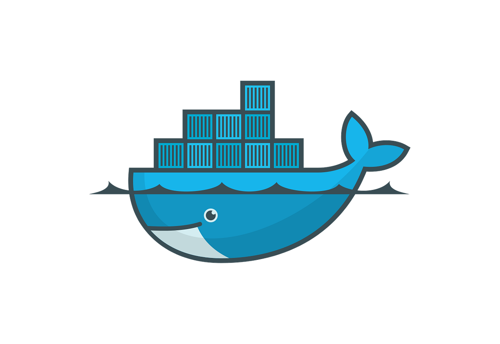

Umiejętności

Polski (Ojczysty)

Angielski (C1)
Windows
Linux
iOS
MS Office
Powershell
Nix
Git
Python
HTML
CSS
JS
AWS
FreeCAD
Blender

Docker
Adobe
Affinity
Gimp
Résumé
Gadget Centre, Plymouth, Wielka Brytania
07/2024 - 08/2025
Samozatrudnienie, Kornwalia, Wielka Brytania
09/2021 - 10/2024
AWS Certified Solutions Architect - Associate
08/2025
Creative Media Production and Technology
09/2019 - 07/2021
Cambridge English: Advanced
2019
Klasa Politechniczna (rozszerzona informatyka, matematyka oraz fizyka)
09/2016 - 05/2019
Polski (Ojczysty)
Angielski (C1)
Windows
Linux
iOS
MS Office
Powershell
Nix
Git
Python
HTML
CSS
JS
AWS
FreeCAD
Blender
Docker
Adobe
Affinity
Gimp
Plugin do programu do tagowania plików muzycznych ‑ Beets. Jest odpowiedzialny za zamianę plików muzycznych w bibliotece, kopiując tagi do nowego pliku muzycznego. Wymagało to reverse‑engineering innych pluginów, z powodu przeciętnej dokumentacji
Strona na której Państwo są w tym momencie, jest częścią mojego projektu Cloud Resume. Celem tego projektu jest pokazania umiejętności Front-end, Back-end, oraz AWS. Do stworzenia tej strony użyłem HTML, CSS, JS, Git, GitHub, GitHub Actions, S3, R53, CloudFront.